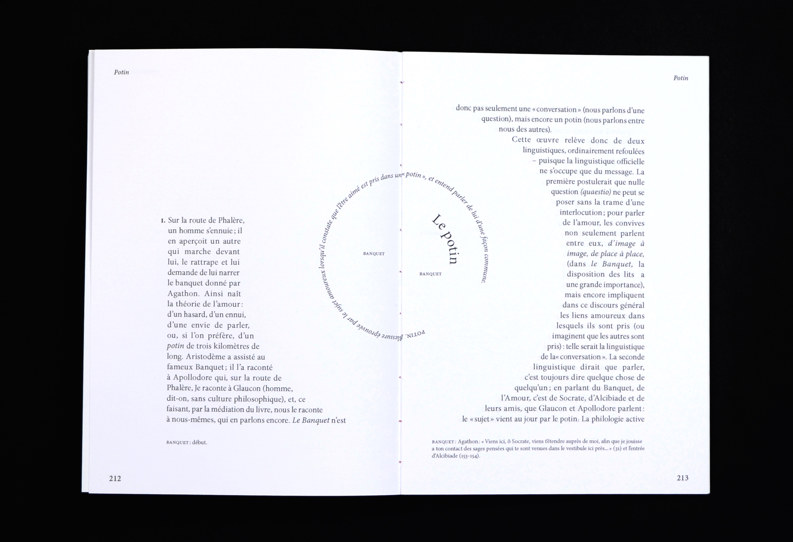

Fissure
Fanzine
Fanzine compilant des articles autour de l’urgence écologique et climatique. Durant un workshop organisé par Hadrien Herzog, par groupe de trois, nous avons pensé un dépliant illustré à travers une mise en page brute et spontanée.